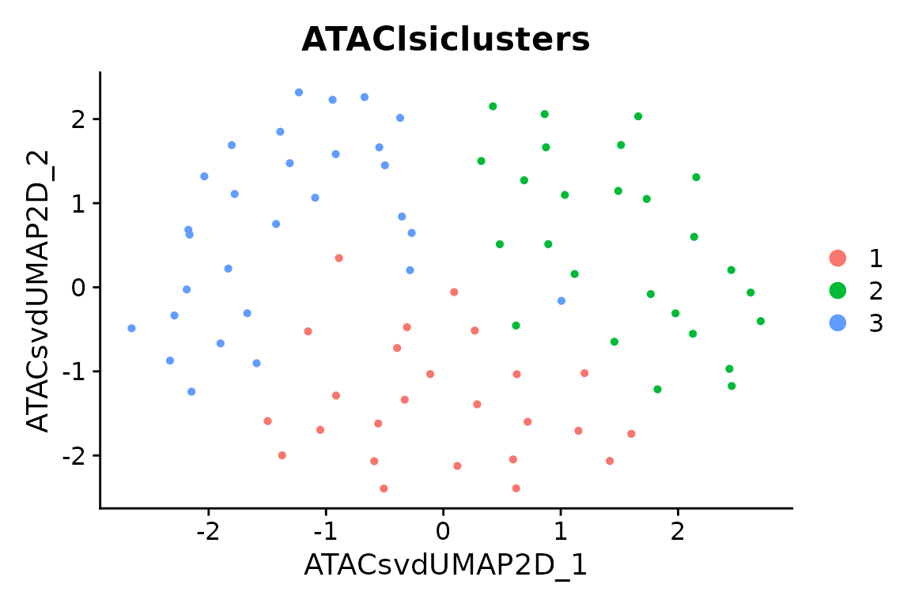

Start with packaged data
This first block executes with the installed package and Signac, without fragments, sequence downloads or a peak caller. It uses measured ATAC counts from 80 packaged multiome cells and keeps only the ATAC assay. The small subset illustrates the interface, not recommended biological analysis parameters.
data("pbmcmultiome_sub", package = "scop")
source <- subset(pbmcmultiome_sub, cells = colnames(pbmcmultiome_sub)[1:80])
#> Loading required namespace: SeuratObject
#> Loading required namespace: Signac
quick <- scop::ReadATACData(
SeuratObject::LayerData(source, assay = "peaks", layer = "counts"),
ranges = Signac::granges(source[["peaks"]]), verbose = FALSE
)
quick <- scop::RunStandardWorkflow(quick,
assay = "peaks",
nHVF = 100, linear_reduction_dims = 10, linear_reduction_dims_use = 2:8,
neighbor_k = 10, nonlinear_reduction_dims = 2, cores = 1, verbose = FALSE
)
#> ℹ [2026-11-12 06:14:13] Skip `log1p()` because `layer = data` is not "counts"
record <- SeuratObject::Misc(quick[["ATAClsi"]], "scop_atac_representation")
stopifnot(identical(record$dimensions, 2:8), scop::CheckATACData(quick)$valid)
Seurat::DimPlot(quick, reduction = "ATACUMAP2D", group.by = "ATAClsiclusters")
External data and resources
The remaining external-data recipe starts with measured counts over one common peak universe. It does not require fragments, peak calling, or recount. Website rendering displays those blocks without downloading data or executing their external analysis. Run the blocks in a prepared R session with the listed resources.
The source is the 10x PBMC ATAC v2 dataset used by Signac. Use a new data directory and explicitly download the filtered peak matrix and the reference sequence. Analysis functions do not download these resources.
data_dir <- "atac_data"
dir.create(data_dir)
base <- paste0(
"https://cf.10xgenomics.com/samples/cell-atac/2.1.0/",
"10k_pbmc_ATACv2_nextgem_Chromium_Controller/"
)
prefix <- "10k_pbmc_ATACv2_nextgem_Chromium_Controller_"
matrix_file <- file.path(data_dir, paste0(prefix, "filtered_peak_bc_matrix.h5"))
utils::download.file(paste0(base, basename(matrix_file)), matrix_file, mode = "wb")
fasta_gz <- file.path(data_dir, "hg38-chr1.fa.gz")
utils::download.file(
"https://hgdownload.soe.ucsc.edu/goldenPath/hg38/chromosomes/chr1.fa.gz",
fasta_gz,
mode = "wb"
)
fasta <- file.path(data_dir, "hg38-chr1.fa")
Biostrings::writeXStringSet(Biostrings::readDNAStringSet(fasta_gz), fasta)
Rsamtools::indexFa(fasta)
reference <- Rsamtools::FaFile(fasta)
tools::md5sum(c(matrix_file, fasta_gz))The worked acceptance run used R 4.5.2, Seurat 5.3.0, SeuratObject 5.2.0, Signac 1.16.0, motifmatchr 1.32.0 and chromVAR 1.32.0. These are a tested combination, not a promise about every historical or development release. Prepare hdf5r, sequence packages, TFBSTools and JASPAR2020 separately.
Import and declare the analysis scope
The full source matrix has 165,434 peaks and 10,246 cells. This teaching run explicitly selects 1,000 cells and chr1, then removes peaks with zero total counts in those cells. This gives 15,856 peaks. It is a chromosome-scoped software acceptance run, not a whole-genome PBMC atlas.
atac <- scop::ReadATACData(matrix_file, genome = "hg38", sample = "PBMC_capture")
cells <- withr::with_seed(20261015, sort(sample(colnames(atac), 1000)))
peaks <- rownames(atac)[as.character(GenomicRanges::seqnames(Signac::granges(atac))) == "chr1"]
atac <- subset(atac, cells = cells, features = peaks)
counts <- SeuratObject::LayerData(atac, layer = "counts")
atac <- subset(atac, features = rownames(counts)[Matrix::rowSums(counts) > 0])
atac$capture <- "PBMC_capture"
saveRDS(atac, file.path(data_dir, "atac_counts.rds"))The H5 importer treats its interval labels as 0-based half-open input and stores 1-based closed GRanges. It records original feature/barcode identifiers. Missing fragments do not invalidate this matrix path. Different sample-specific peak matrices must first be recounted over common ranges; padding unmeasured peaks with zeros is not a substitute.
TF-IDF, LSI and explicit dimensions
TF-IDF weights counts by within-cell frequency and across-cell rarity. Signac performs this transformation and SVD. SCOP organizes selected features, neighbors, clusters and UMAP. The selected dimensions are explicit here; the first component is not automatically evidence of biology or automatically evidence of noise.
atac <- scop::RunStandardWorkflow(atac,
assay = "peaks", prefix = "ATACInitial", normalization_method = "TFIDF",
nHVF = 5000, linear_reduction_dims = 25,
linear_reduction_dims_use = 2:20, cores = 1
)
representation <- SeuratObject::Misc(atac[["ATACInitiallsi"]], "scop_atac_representation")
representation$dimensions
representation$depth_correlation
Seurat::DimPlot(atac, reduction = "ATACInitialUMAP2D", group.by = "ATACInitiallsiclusters")The receipt retains actual cells/features, selected dimensions and Pearson correlations with raw library depth. Inspect these correlations before selecting dimensions for a new dataset. Undefined correlations remain NA. A requested ATAC clustering or UMAP failure terminates the workflow instead of reporting success.
Sequence motifs and chromVAR
Motif incidence records sequence matches in peaks. Its inputs are ranges, reference DNA and PWMs; counts are needed later for chromVAR’s accessibility deviations. This small panel demonstrates the data flow rather than a complete TF screen. Keep stable motif IDs even when display names repeat.
pfm <- TFBSTools::getMatrixSet(JASPAR2020::JASPAR2020, opts = list(
ID = c("MA0139.1", "MA0080.5", "MA0105.4", "MA0107.1", "MA0039.4", "MA0466.2", "MA0098.3")
))
atac <- scop::AddATACMotifs(atac, reference, pfm, genome.id = "hg38")
atac <- scop::RunChromVAR(atac, reference,
genome.id = "hg38",
niterations = 25, seed = 19
)
scores <- SeuratObject::LayerData(atac, assay = "chromvar", layer = "data")
receipt <- SeuratObject::Misc(atac[["chromvar"]], "scop_chromvar")
dim(scores)
receipt$background_source
receipt$nonfinite_scoresSCOP calls official chromVAR computation and retains native
deviations, Z-scores and actual background indices. Z-scores are stored
in data, not raw counts. They describe motif-associated
accessibility, not TF expression, binding or causality. Supplied
reference labels document provenance; matching labels alone do not
verify the DNA sequence itself.
Save and resume
For a regular R checkpoint, saveRDS(atac, "atac.rds")
and readRDS("atac.rds") preserve the complete object. No
dedicated export step is needed to continue an analysis. The optional
interchange example below adds BED/count files and an external-resource
inventory.
scop::ExportATACResults(atac, outdir = "pbmc_matrix_export", assay = "peaks", counts = TRUE)
# In a fresh R session with the same dependencies:
restored <- readRDS("pbmc_matrix_export/object.rds")
SeuratObject::Embeddings(restored[["ATACInitiallsi"]])[1:3, 1:3]The export includes the complete RDS object, selected-assay matrix companions, metadata, reference intervals, external-resource inventory and file checksums. RDS preserves R classes; CSV does not preserve all R column classes. Existing destinations are rejected. Continue with the fragment workflow only when indexed fragments are actually available.